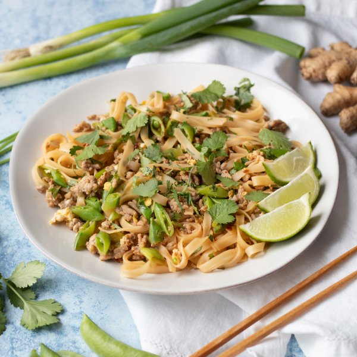

Spicy Pork Pad Thai with Sugar Peas, Lime & Cilantro

Nutrition (per serving)
674 kcalCalories
41.3 gProtein
58.8 gCarbs
30 gFat
Full nutrition table
| Calories | 674 kcal |
| Total fat | 30 g |
| Saturated fat | 9.2 g |
| Trans fat | 0.2 g |
| Cholesterol | 197.5 mg |
| Sodium | 268 mg |
| Carbohydrates | 58.8 g |
| Fiber | 4.1 g |
| Sugars | 5.5 g |
| Protein | 41.3 g |
| Potassium | 897 mg |
| Calcium | 120.2 mg |
| Iron | 4.6 mg |
| Vitamin A | 414.1 IU |
| Vitamin C | 52 mg |
| Vitamin D | 47 IU |
Cookware
Ingredients
- 1 small bunchcilantro
- 2eggs
- 2 clovesgarlic
- 1 small bunchgreen onions (scallions)
- 1 ½ lblean ground pork
- 2limes
- 1 (8 oz) pkgsugar snap peas
- brown sugar
- chili-garlic sauce
- fish sauce
- flat rice (pad thai) noodles
- soy sauce
Steps
- Wash and dry the fresh produce.2 limes
1 (8 oz) pkg sugar snap peas
1 small bunch green onions (scallions)
1 small bunch cilantro - Fill a medium saucepan halfway with water and bring to a boil. Remove from heat and add rice noodles. Soak for 10 minutes or according to package directions. Then using a strainer or colander, rinse the rice noodles under cold, running water.8 oz flat rice (pad thai) noodles
- Preheat a large skillet over medium-high heat.
- When the skillet is hot, add pork and, breaking apart with a spoon, cook until browned and crumbly, 5-7 minutes.1 ½ lb lean ground pork
- Meanwhile, juice half the limes into a small bowl. Add sauces and sugar; whisk to combine.¼ cup soy sauce
4 tsp fish sauce
4 tsp chili-garlic sauce
1 tsp brown sugar - Peel and mince garlic.2 cloves garlic
- Slice peas and green onions crosswise into ¼-inch pieces at an angle.
- Add garlic and vegetables to the skillet and cook, stirring frequently, until they begin to soften, about 4 minutes.
- Push pork and veggies to the edge of the skillet and crack eggs in the center. Scramble until eggs are lightly set, then mix in with the pork and veggies.2 eggs
- Shave cilantro leaves off the stems; discard the stems and mince the leaves. Add cilantro to the skillet, reserving some for garnish.
- Add noodles and sauce to the skillet. Stir until coated and warmed through, 2-4 minutes.
- Cut remaining lime into wedges.
- To serve, divide Pad Thai between bowls and garnish with remaining cilantro and lime wedges.